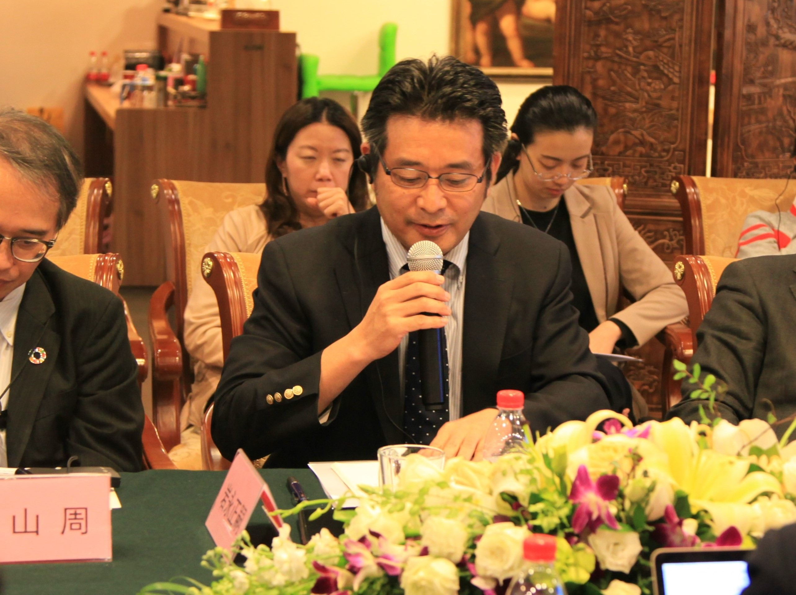

Recent Activities

A Conversation Between Sino-Japanese Scholars...
The U.S. - China New Perspectives Foundation and the Sasakawa Japan-China Friendship...

Mayor’s Delegation
From March 11 – 17, 2017, the U.S. - China New Perspectives Foundation and the Tai Initiative jointly...

Documentary "Mr. Deng Goes to Washington"...
On November 16, 2016, the screening of documentary Mr. Deng Goes to Washington was

The Third U.S. - China Counterterro..
Since 2014, the U.S. - China New Perspectives Foundation has held the Sino - U.S....